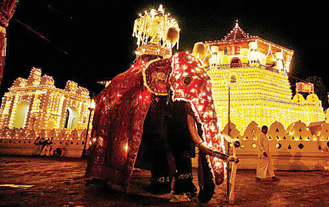
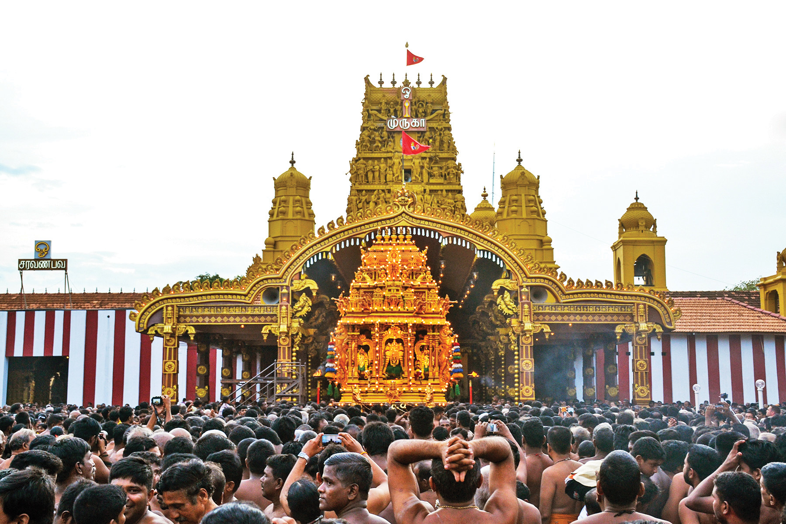
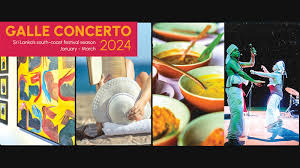

Sri Lanka's vibrant traditions and rich heritage were showcased at the International Bhagavad Gita Festival 2024, organized with Indian support. The event included Rangoli, art competitions, cultural performances, and intellectual discourses, attracting participants from both countries.

In Sri Lanka, the iconic Nallur Kandasamy temple in Jaffna has been drawing thousands of devotees for its annual chariot festival. The main festival ‘ther thiruvizha’ was celebrated yesterday with thousands of devotees pulling the intricately decorated chariot with the idol of Lord Murugan while chanting hymns. Devotees from across the world gathered at the temple to see the temple’s primary deity Murugan paraded through the streets of Jaffna. The Nallur Kandaswamy Temple is a revered Hindu temple dedicated to Lord Murugan, the god of war and victory. The annual Nallur Festival which spans 25 days features traditional music, dance, and art forms passed down through generations. The festival serves as a unifying force, bringing together Tamil communities from various backgrounds.
Vesak is a public holiday in Sri Lanka, celebrated for its significance in the birth, enlightenment, and mahaparinirvana of Gautama Buddha. It involves religious and cultural activities, including rituals and meditation in Buddhist temples. Communities create elaborate lanterns and decorations, while free food stalls emphasize generosity and compassion. Vesak is a time for reflection, acts of kindness, and spreading peace, and serves as a reminder of the Buddha's teachings.

Galle Concerto 2024: This prestigious event, held in the historic city of Galle, will celebrate various artistic forms, from literature to music. The festival aims to elevate Sri Lanka on the global stage by hosting internationally acclaimed artists, while local culinary and artistic talents will also be highlighted in events like the Southern Book Fair and the Matara Festival for the Arts.